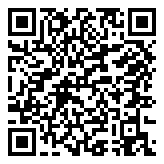

🎬 Situation déclenchante en vidéo
Harpe sans fil Microbit Collège Diderot Aigueperse 63, 00:02:00 · Tube Sciences & Technologies (PeerTube apps.education.fr) : chaîne « Barathon Jerome »
Auteur : Jérôme BARATHON, élèves de 4e du collège Diderot d'Aigueperse (63), concours « YES WE CODE » 2024-2025. Licence : Public Domain Dedication (CC0). Réutilisation : telechargement autorise. Voir la fiche d'origine
Réserve : Deux minutes, dont une part de commentaire d'élèves : couper vers quarante à cinquante secondes pour préserver le mystère. Le montage est finalisé par le professeur (mention de la fiche), donc la vidéo comporte des passages explicatifs. Réalisée avec des capteurs à ultrasons, pas avec la carte nue : l'écart avec le matériel disponible au LFT doit être anticipé, sous peine de promettre ce qu'on ne pourra pas faire.
⬇ Téléchargeable. Sa licence autorise la copie : téléchargez-la depuis sa fiche et posez-la sur l'ordinateur de la salle. Elle sera lisible même sans connexion. Créditez l'auteur à la projection.
Prompt de génération, variantes et repli sans écran : dossier des situations déclenchantes.
Séquence 3 : Programmation d'objets connectés (Micro:bit)
Comment programmer une carte Micro:bit pour créer un objet interactif ? Comment utiliser les capteurs et l'affichage LED ?
🔗 Lien direct vers cette page

Scanne le QR code, ou saisis ce code sur la page d'accès direct du site.
- Ouvre PRONOTE, Espace Élèves, avec l'identifiant que tu utilises déjà.
- Va dans Cahier de textes, puis Travail à faire.
- Choisis la ligne de Technologie correspondant à cette activité.
- Clique sur Déposer ma copie et joins ton fichier, ou une photo nette de ta feuille.
Si la connexion ne passe pas : rends ta feuille en main propre au professeur à la séance suivante. Le dépôt en ligne ne remplace pas le travail, il sert seulement à le transmettre.
| Niveau | 4ème | Durée | 4 séances de 1h30 |
| Thème | Thème 2 : Programmation et objets numériques | ||
| Compétences | Programmer un objet connecté Utiliser capteurs et actionneurs | ||
💡 Présentation de la carte Micro:bit
- 25 LEDs (matrice 5×5) pour afficher des images et du texte
- 2 boutons (A et B) pour interagir
- Accéléromètre pour détecter les mouvements (secouer, incliner)
- Boussole pour détecter l'orientation
- Capteur de température et de luminosité
- Communication radio entre cartes Micro:bit
On programme la Micro:bit sur le site makecode.microbit.org avec des blocs (comme Scratch).
Activité 1 : Découverte : afficher sur les LEDs (20 min)
Premiers programmes
Ouvre makecode.microbit.org et crée un nouveau projet. Réalise les programmes suivants :
a) Programme 1 : Affiche ton prénom en défilement sur les LEDs.
| Bloc utilisé | Catégorie | Action |
|---|---|---|
au démarrage | Base | Exécuter au démarrage |
montrer texte "..." | Base | Afficher ton prénom |
b) Programme 2 : Affiche un smiley heureux quand tu appuies sur le bouton A, et un smiley triste quand tu appuies sur B.
| Bloc utilisé | Catégorie | Action |
|---|---|---|
lorsque le bouton A est pressé | Entrée | Détecter appui sur A |
montrer icône 😀 | Base | Smiley heureux |
lorsque le bouton B est pressé | Entrée | Détecter appui sur B |
montrer icône ☹ | Base | Smiley triste |
Activité 2 : Les capteurs de la Micro:bit (30 min)
Utiliser les capteurs intégrés
La Micro:bit possède des capteurs. Tu vas les programmer pour créer des interactions.
a) Programme 3, Thermomètre : Affiche la température quand on appuie sur A+B.
Quels blocs as-tu utilisés ?
b) Programme 4, Dé numérique : Quand on secoue la Micro:bit, afficher un nombre aléatoire entre 1 et 6.
| Bloc utilisé | Catégorie | Action |
|---|---|---|
lorsque secoué | Entrée | Détecter le secouement |
montrer nombre | Base | Afficher le résultat |
choisir au hasard de 1 à 6 | Maths | Nombre aléatoire |
c) Quel capteur est utilisé pour détecter le secouement ?
Activité 3 : Projet : Jeu de Ludo Micro:bit (40 min)
Créer un jeu interactif
Tu vas programmer un jeu de Ludo (jeu de l'oie simplifié) en utilisant la Micro:bit comme dé électronique.
- Secouer la Micro:bit = lancer le dé (nombre aléatoire 1-6)
- Le nombre s'affiche sur les LEDs
- Bouton A = afficher le score du joueur 1
- Bouton B = afficher le score du joueur 2
- A+B = remettre les scores à zéro
a) Crée une variable « score1 » et une variable « score2 ». À quel moment sont-elles modifiées ?
b) Écris l'algorithme du jeu en pseudo-code :
c) Programme le jeu dans MakeCode et teste-le sur le simulateur.
d) Transfère le programme sur la carte Micro:bit réelle et joue avec un camarade.
📝 Synthèse : Ce que je retiens
Complète avec : Micro:bit, LEDs, boutons, accéléromètre, capteurs, variable, MakeCode, blocs
La carte ........................ est un mini-ordinateur programmable avec des ........................ (matrice 5×5), des ........................ (A et B) et des ........................ intégrés.
L'........................ permet de détecter les mouvements (secouer, incliner).
On programme la Micro:bit avec ........................ en utilisant des ........................ visuels.
Une ........................ stocke une valeur qui peut changer pendant le programme (ex : score d'un joueur).